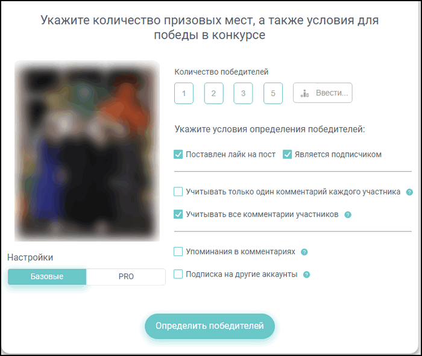
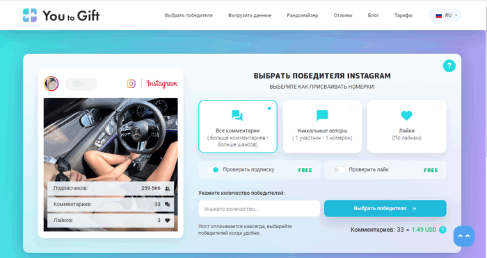
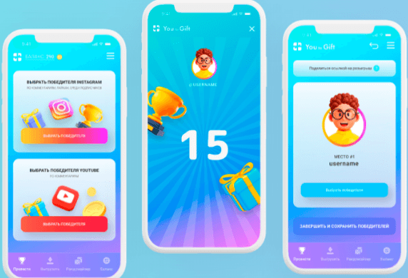
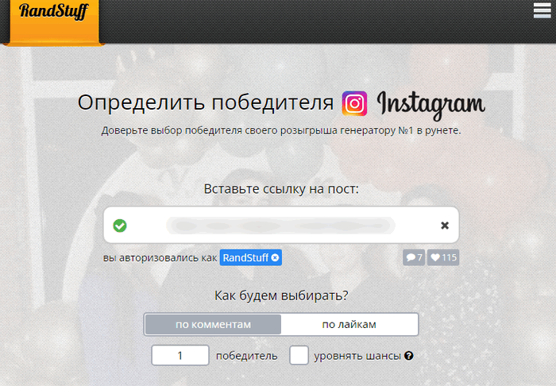
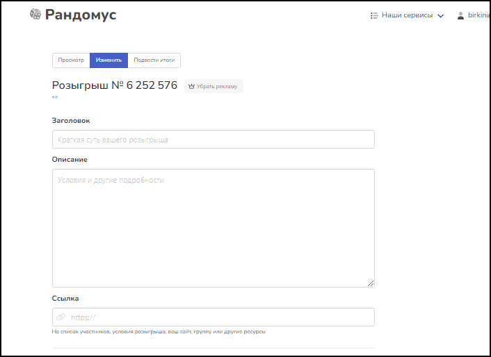
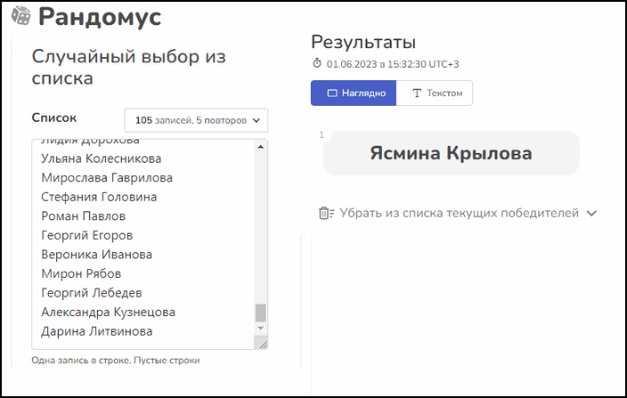
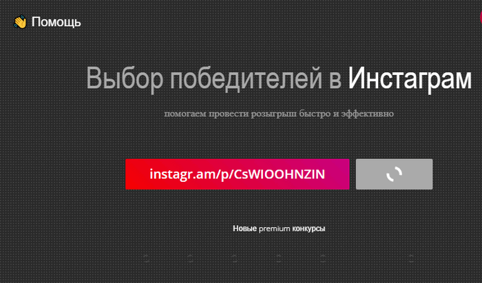
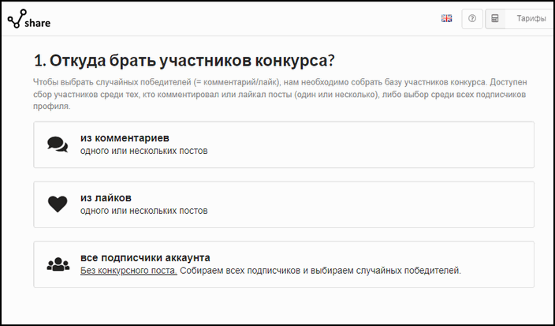

ТОП 10 сервисов, сайтов и приложений онлайн для проведения розыгрыша и определения победителя в Инстаграм по комментариям

Провести розыгрыш в Инстаграме* бесплатно может любой, даже без статуса «Бизнес-профиль» или миллионной аудитории. Важно, чтобы публикация с конкурсом не содержала ссылку, без агрессивного привлечения участников.
Типы розыгрышей в Инстаграме*
Конкурсы комментариев и лайков – наиболее популярны в социальной сети, потому что это тот тип активности, который легко отследить. Организаторы пользуются простыми схемами, чтобы создать активность и привлечь участников к подпискам.
Разновидности конкурсов зависят от организаторов: компании или бренды, блогеры, творческие события, общественные заведения и обычные пользователи.
Розыгрыши можно разделить на такие виды:
- конкурс репостов. Сервисы для розыгрышей в Инстаграме* помогут определить победителя;
- творческие задания: сделать публикацию по определенной теме;
- отметить друзей в комментариях;
- сделать короткое видео, где будет упоминание общественного заведения, бренда;
- поставить лайк и написать комментарий. Чем больше откликов, тем лучше.
Розыгрыши в Инстаграме* подразумевают вознаграждение. Это может быть: реальный подарок, пиар, цифровой продукт. Например, блогеры у которых есть свои курсы, могут пригласить победителя стать участником обучающего марафона.
Что понадобится для конкурса
Кроме идеи и выбора подарка, организатором нужно заранее подготовить сервисы, которыми они воспользуются чтобы подвести итоги конкурса в Инстаграме*. Что поможет:
- комплексные сайты по считыванию количества лайков, комментариев;
- генератор случайных чисел для розыгрыша в Инстаграме*;
- таблицы, чтобы составить базу участников.
ТОП-10 сервисов
В ТОП сайтов для розыгрыша в Инстаграме* внесены платформы, которые предлагают одиночную услугу и комплекс. Сервис может не только считывать количество участвующих, но и определять победителей, указывая «первое», «второе» или «третье место».
№1 GetWinner – все, что нужно блогеру
Сервис GetWinner – это комплексные услуги, которые помогут блогеру и организатору конкурса определить победителей, исключив ботов, сделать выборку по подпискам и упоминаниям в комментариях.
 Преимущества:
Преимущества:
- выбор победителя по лайкам, комментариям;
- не нужна авторизация и ввод логина;
- можно проверить чужой профиль;
- фильтр от недобросовестных подписчиков;
- в условия выигрыша можно указать подписку на аккаунты спонсоров;
- создает итоговые страницы, которые можно опубликовать в Сторис или постах;
- есть история проведенных розыгрышей, с разбивкой по дате и аккаунтам, где проводился конкурс;
- неограниченное количество конкурсов.

Организатор может оформить один из пакетов услуг и воспользоваться неограниченным числом розыгрышей. Сервис предлагает несколько фильтров для выбора победителей: учет количества комментариев, число победителей (до 5 или ввести свое значение), является ли пользователь подписчиком. С помощью GetWinner можно провести конкурсы, отследить предыдущие и при необходимости, заменить победителя. При формировании отчета появится функция: «Изменить победителя», где можно указать другого пользователя, если первый отказался от вознаграждения или не подходит по любым другим критериям.№2 YouToGift
Определить победителя в Инстаграм* по комментариям поможет этот сервис, где есть выбор по лайкам, откликам, указание предполагаемого количества победителей. От количества участников зависит цена пакета.

Если под постом менее 300 комментариев, то это минимальный пакет услуг. Оплата происходит единоразово перед демонстрацией результата проверки.Любой пользователь может воспользоваться бесплатным рандомайзером с возможностью определения победителя по числу или выбрать призера из списка CSV.
Одним из преимуществ является наличие приложение, подойдет тем, кто постоянно в движении и нет возможности пользоваться компьютером. Приложения есть для:
- iOS.
- Android.

Люди оставляют положительные отзывы о данном сервисе для розыгрышей в Инстаграм* и рекомендуют его другим, поэтому смело можно пользоваться для определения победителя в конкурсах.№3 RandStuff
Выявить победителя с помощью этого сервиса возможно только после авторизации в социальной сети.

Пользователь указывает ссылку на пост, проходит авторизацию и появляются настройки: выбрать по лайкам или комментариям, уровнять шансы (учитывать только один отклик от одного человека). RandStaff предлагает проверить первый раз бесплатно, а дальше – оформить тариф по 150 рублей за один результат.№4 Рандомус
Рандомного победителя определить с помощью этого сервиса не так просто.

Предложено два способа, как вычислить победителя:- список всех участников по никнеймам;
- функция: «Провести розыгрыш».

Во втором случае, перед пользователей появится страница, где нужно ввести описание, название, добавить ссылку на перечень участников. Это значит, что организатору в любом случае придется составить список, куда вынести никнеймы участников. Услуга генерации бесплатная и не оплачивается тарифами.№5 Lizaonair

Чтобы воспользоваться сервисом и определить победителя, пользователю нужно в публикации поставить тег @Lizanair или же приобрести премиум пакет. Также, нужна авторизация через социальную сеть. Проверить победителя можно только по подключенному аккаунту – появится список публикаций из которых нужно выбрать ту, где размещен розыгрыш.№6 Рандомайзер
Провести конкурс в Инстаграме* и определить победителя с помощью Рандомайзера проще всего. Это бесплатный сервис, который в случайном порядке показывает числа. За организатором останется посчитать количество участников, вписать количество от единицы до нужного и подождать, пока будет сгенерировано число.
№7 Random.org
Определить победитель среди комментариев через этот сервис можно также, как и с помощью Рандомайзера. Разница лишь в том, что сервис англоязычный и поле ввода значения находится справа, на главной странице.
№8 VerifyShare
Выбрать победителя в Инстаграме* по комментариям бесплатно поможет этот сайт. Поддерживает три типа аудитории:
- по лайкам;
- комментариям;
- все подписчики аккаунта.

Пользователь может выбрать критерии проверки:- по репостам в Stories;
- по лайкам;
- комментариям;
- только открытые аккаунты;
- репосты в Ленту.
После того, как все условия будут указаны, нужно перейти к оплате. Появится несколько тарифов, которые включают одноразовую оплату, ежемесячную и безлимит. Работать с сервисом можно без регистрации или создать личный кабинет, чтобы возвращаться к истории ранее проведенных розыгрышей.
№9 InstaWays
У сервиса немного другие функции: можно выгрузить комментарии, список подписчиков из своего или чужого аккаунта, с присвоением номера. Сайт полезен для блогеров и организаторов конкурсов, которым нужно получить перечень всех откликов и сгенерировать по ним число для дальнейшего определения победителей.
№10 Случайное число
Приложение для розыгрыша в Инстаграме* «Случайное число» работает по диапазону, который укажет пользователь. Дополнительные опции: исключить повтор и количество чисел. Если у организатора уже есть список участников по номерам – нужно создать диапазон и сгенерировать число.
Почему участвует мало подписчиков
Одна из причин, почему мало участвующих – приз, в котором не заинтересована аудитория. Например, курс, предназначенный для экспертов, а не новичков. Другие причины:
- плохая репутация. Ранее блогер или бренд уже проводил розыгрыш, о котором много негативных отзывов;
- блог не популярен. Мало подписчиков или активной аудитории;
- не та целевая аудитория. Изначально скептически настроенные пользователи;
- мало публикаций и историй, которые рассказывают о проведении розыгрыша.
Обычно перед запуском курса или конкурса проводят «прогрев». То есть создают публикации, где завлекают клиентов к участию. Это может быть одна или несколько Сторис, с кликбейтным текстом. Если у блогера или бренда плохая репутация, то исправить это поможет сотрудничество с другой медийной персоной. Но конкурс нужно провести честно, учитывая интересы подписчиков. Допущенные ошибки в прошлом могут быть причиной «теневого бана», если на профиль жаловались участники. Что также мешает продвижению публикации и повышению охватов.